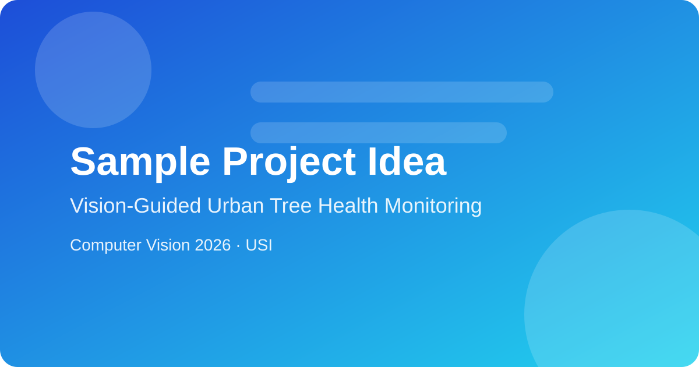

Sample Idea: Vision-Guided Urban Tree Health Monitoring
Cities need scalable ways to monitor tree health, but manual surveys are expensive and infrequent. This project proposes a lightweight computer vision pipeline that combines street-level photos and drone snapshots to estimate crown density, discoloration, and early stress indicators over time. We would build a compact dataset from public imagery, annotate a small set of health labels, and benchmark segmentation and feature extraction models for robustness under changing weather and illumination. The expected output is an interactive map where each tree receives a confidence-based health score and short explanation of the visual cues used by the model. The project emphasizes practical reproducibility, model interpretability, and clear communication of uncertainty for non-technical stakeholders such as city planners and environmental services.